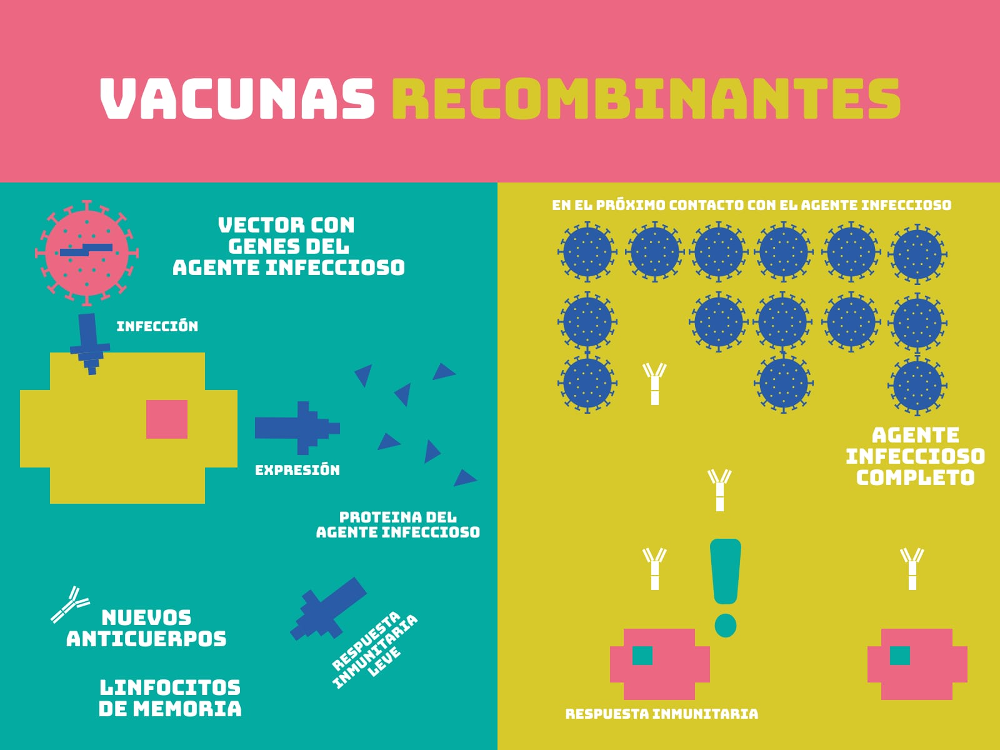
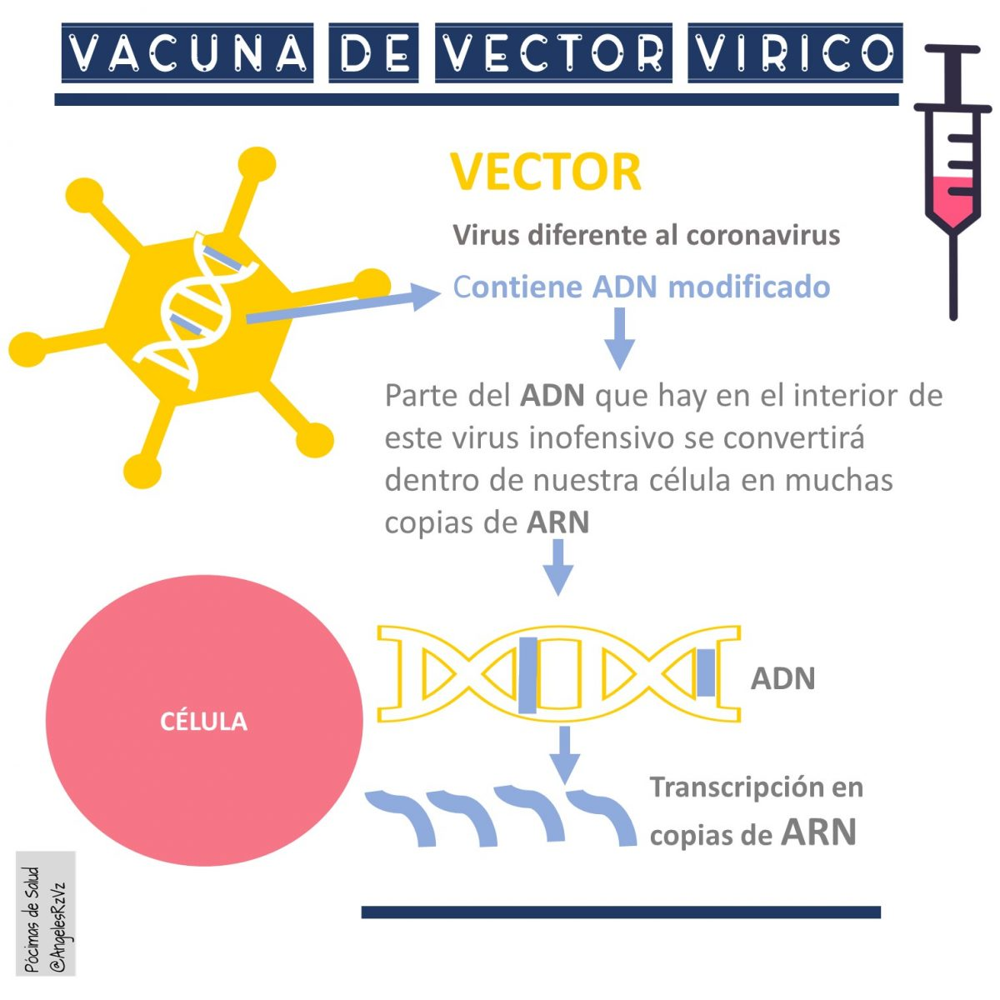

Los principales tipos de vacunas se diferencian según la forma en que presentan al sistema inmunitario el patógeno o sus componentes. A continuación se describen los más utilizados:
Vacunas vivas atenuadas:
Contienen virus o bacterias debilitados que replican de manera limitada sin causar la enfermedad grave. Generan una inmunidad fuerte y duradera con una o dos dosis. Se emplean, por ejemplo, contra sarampión, paperas y rubéola (MMR), varicela y fiebre amarilla.
Vacunas inactivadas:
Incluyen el patógeno muerto o inactivado químicamente o por calor. Suelen requerir dosis de refuerzo para mantener la protección. Ejemplos típicos son la vacuna inyectable contra la gripe, la poliomielitis (IPV), la hepatitis A y la rabia.
Vacunas de subunidades, recombinantes, polisacáridas y combinadas:
Emplean fragmentos específicos del germen, como proteínas de la cápsula o azúcares, para inducir una respuesta focalizada sin introducir el patógeno completo. Pueden utilizarse en personas con sistemas inmunitarios debilitados. Ejemplos: vacuna contra el VPH (virus del papiloma humano), la hepatitis B y la neumocócica conjugada.

Vacunas con toxoides:
Usan la toxina neutralizada del patógeno en lugar del germen en sí. Estimulan la producción de antitoxinas que neutralizan la toxina natural. Se emplean en difteria y tétanos.
Vacunas de ácidos nucleicos (ARN mensajero y ADN):
Introducen instrucciones genéticas para que las células del huésped sinteticen una proteína del patógeno, desencadenando la respuesta inmune. Las vacunas de ARNm contra COVID-19 de Pfizer-BioNTech y Moderna son ejemplos pioneros de esta tecnología.
Vacunas vectorizadas virales:
Utilizan virus inofensivos (vectores) modificados para transportar genes del patógeno objetivo. Generan una respuesta inmune sólida sin replicar el agente original. Ejemplos: vacuna de AstraZeneca/Oxford y la de Johnson & Johnson contra COVID-19.

Estos distintos enfoques permiten adaptar la estrategia de inmunización según la naturaleza del patógeno, la población diana y las condiciones logísticas, optimizando la eficacia y seguridad de cada vacuna.